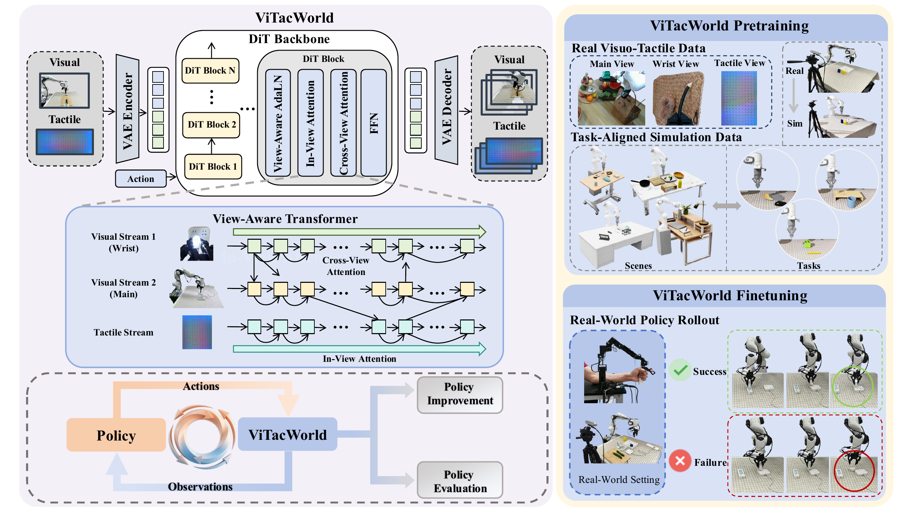
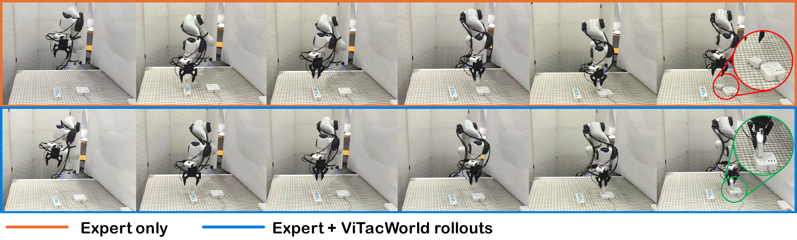
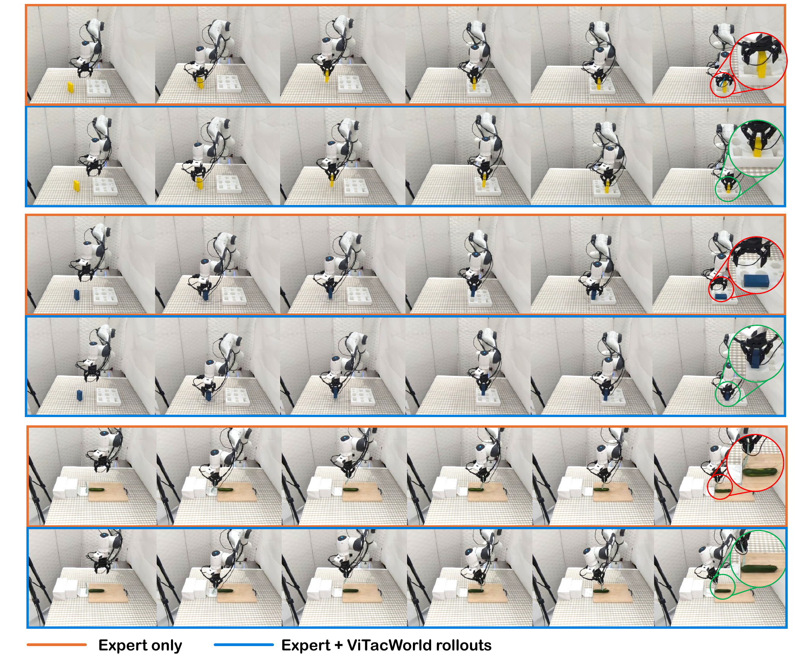
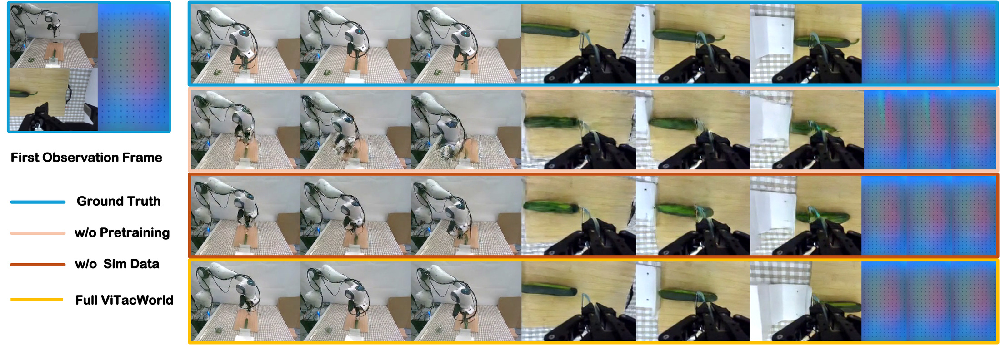

ViTacWorld: Scaling Visuo-Tactile World Models for Contact-Rich Robot Manipulation
Abstract
Contact-rich robot manipulation requires physical interaction cues that are often invisible to cameras, making tactile sensing essential for robust control. However, scaling visuo-tactile robot learning remains difficult because real tactile interaction data are expensive to collect, hardware-dependent, and limited in task and scene diversity. We present ViTacWorld, an action-conditioned visuo-tactile world model for scalable contact-rich robot manipulation. ViTacWorld leverages public real tactile datasets and a constructed simulation environment to scale visuo-tactile-action data, exploiting the fact that tactile signals are directly grounded in physical contact and can exhibit a smaller simulation-to-real gap than purely visual observations. The model is first pretrained with large-scale real and simulated visuo-tactile trajectories, and then finetuned with real-world policy rollouts to better match downstream manipulation behaviors. Given robot actions, ViTacWorld predicts temporally aligned visual observations and tactile feedback, enabling visuo-tactile-action rollout generation. To the best of our knowledge, ViTacWorld is the first framework that uses a world model for robot visuo-tactile-action trajectory generation and policy evaluation. It serves two roles: synthesizing rollouts to improve downstream tactile policies, and evaluating policies by predicting action-conditioned visuo-tactile outcomes under controlled action sequences. Experiments on contact-rich manipulation tasks show that ViTacWorld generates physically meaningful rollouts, improves policy performance through scalable data augmentation, and enables action-conditioned policy evaluation.
Video
Method

Results
Policy Improvement with Generated Rollouts
ViTacWorld-generated visuo-tactile rollouts provide additional supervision for downstream policies. Repeating the dream-data augmentation process with a stronger rollout policy yields further gains.
| Data source | Method | Charger Plugging |
Cucumber Peeling |
U-Block Insertion |
Cuboid Insertion |
Avg. |
|---|---|---|---|---|---|---|
| Expert only | ACT + tactile | 0 | 0 | 30 | 30 | 15.0 |
| π0.5 | 10 | 30 | 60 | 40 | 35.0 | |
| π0.5 + tactile | 20 | 40 | 70 | 40 | 42.5 | |
| Expert + Round-1 rollouts |
ACT + tactile | 10 | 20 | 40 | 40 | 27.5 |
| π0.5 | 30 | 60 | 60 | 40 | 47.5 | |
| π0.5 + tactile | 40 | 80 | 80 | 70 | 67.5 | |
| Expert + Round-2 rollouts |
ACT + tactile | 20 | 50 | 50 | 50 | 42.5 |
| π0.5 | 40 | 80 | 90 | 50 | 65.0 | |
| π0.5 + tactile | 60 | 90 | 90 | 80 | 80.0 |
Real-robot success rates (%). Additional dream-data augmentation results. Success rates are reported in percentage. “Round-1 rollouts” denotes the ViTacWorld-generated rollouts used in the main paper. “Round-2 rollouts” further adds a second round of dream rollouts generated by the first-round augmented π0.5 + tactile policy.


Visuo-Tactile World Model Quality
Pretraining improves action-conditioned prediction across the main view, wrist view, and tactile stream. Task-aligned simulation further improves object geometry, motion consistency, and contact prediction.

Policy Evaluation with ViTacWorld
Starting from the same initial conditions, ViTacWorld predicts policy outcomes close to real-robot execution and provides a conservative evaluation signal before deployment.
| Evaluation source | Charger Plugging |
Cucumber Peeling |
U-Block Insertion |
Cuboid Insertion |
Avg. |
|---|---|---|---|---|---|
| Real World | 40 | 80 | 80 | 70 | 67.5 |
| ViTacWorld | 30 | 60 | 70 | 70 | 57.5 |
Policy evaluation with ViTacWorld. Success rates are reported in percentage. We evaluate the first-round augmented π0.5 + tactile policy. Real-robot success rates are measured over 10 trials per task. ViTacWorld uses the same initial observations and samples three imagined rollouts per initial condition; the predicted outcome is assigned by majority vote.